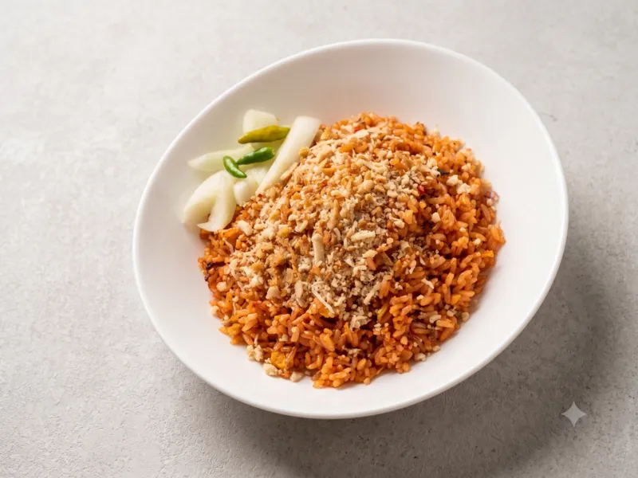
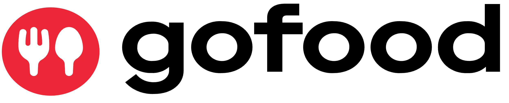
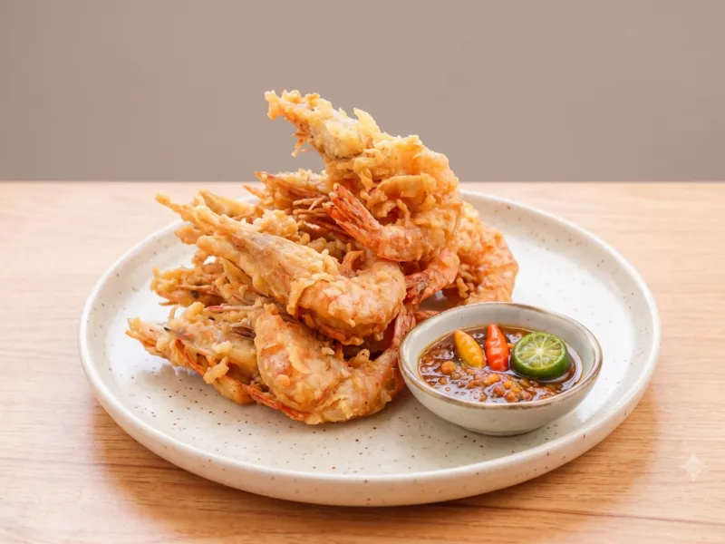

Nasi Goreng Original
Nasi goreng dengan racikan bumbu khas dan aroma menggugah selera.
Warung favorit keluarga
Rasa rumahan dengan bumbu khas, hangat, dan selalu siap memanjakan lidah Anda.

Tambahkan topping favorit agar semakin nikmat.
Topping sosis yang gurih dan mengenyangkan.
Pentol goreng empuk pelengkap hidangan panas.

Udang gimbal renyah untuk rasa laut yang istimewa.

Ayam katsu renyah dengan daging yang juicy.
Pesan via WhatsApp, atau cari kami di GoFood dan GrabFood.
Chat WhatsAppTersedia juga di
Temukan kami di peta. Detail alamat dapat ditanyakan melalui WhatsApp.